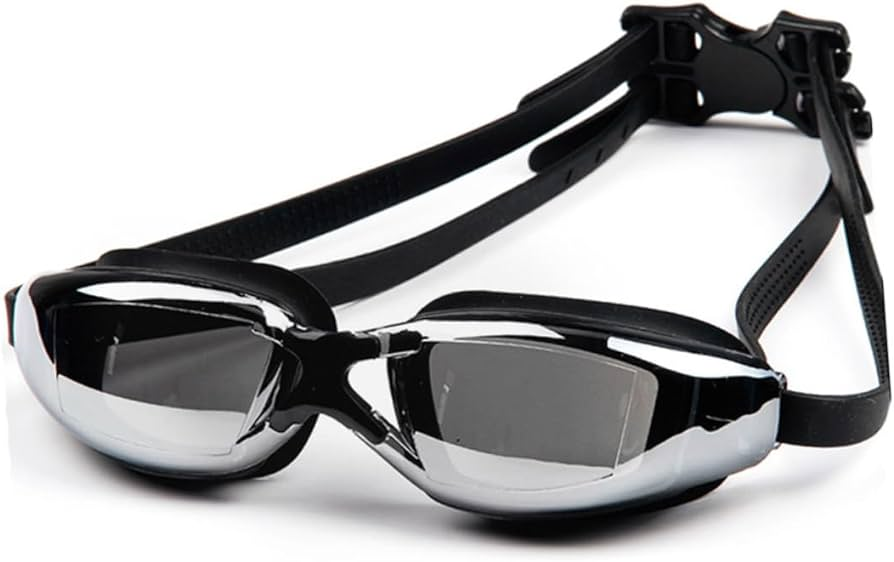
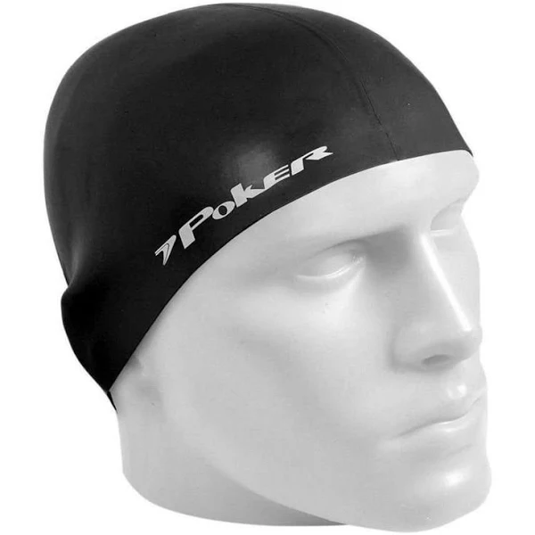

FIRE SWEAT
Oculos de Natação
Nadadora Pé de Pato

Cor: Preta Marca: Tritão Material: Silicone Tamanhos: 35-36-37-38 R$ 800,00
Touca de Natação
História da Natação
Os primeiros registros da prática da natação como atividade datam do século XVII. Foi em 1696, quando o francês M. Thevenal descreveu uma forma de nadar, movimentando braços e pernas. A descrição se assemelha ao que hoje é chamado de nado peito.
Maria Lenk - Nadadora Profissional
A nadadora paulistana começou a treinar aos 10 anos de idade no Rio Tietê, nos anos de 1925. Com 15 anos iniciou sua carreira profissional e, aos 16, venceu sua primeira competição. Foi a primeira mulher sul-americana a competir nas olimpíadas, nos Jogos de Los Angeles, em 1932. Sua participação estimulou a entrada de outras mulheres na natação.

Endereço da loja google maps.